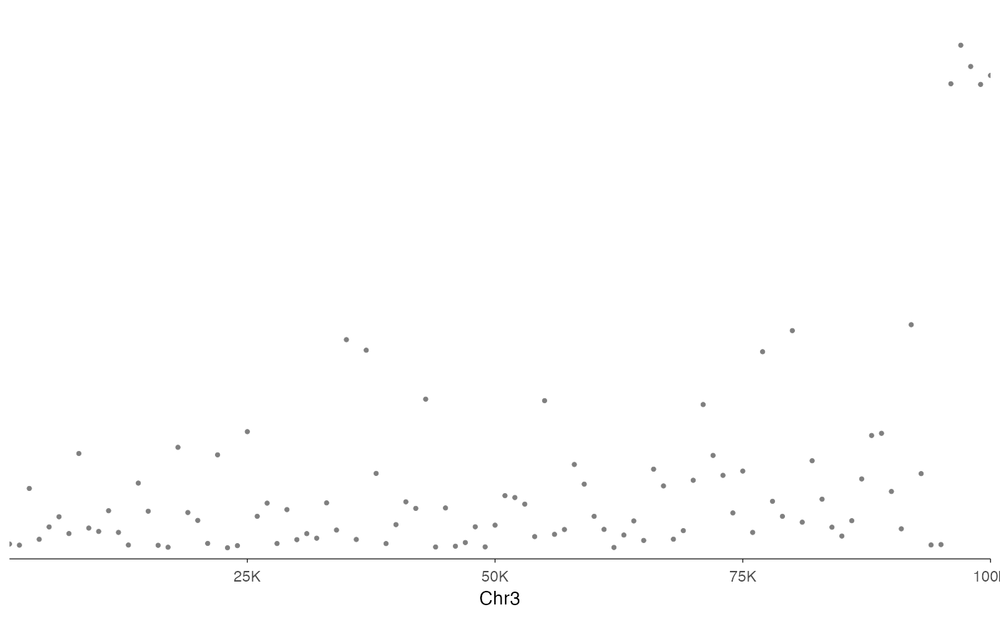
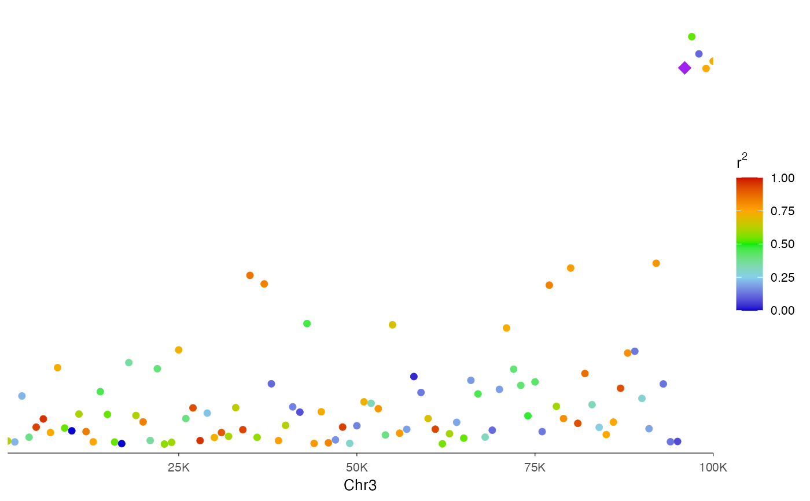

Creates a regional Manhattan plot focused on a single genomic locus, commonly
used for fine-mapping and visualization of association signals with linkage
disequilibrium (LD) information. The plot uses genomic coordinate formatting
consistent with ez_coverage() and ez_gene(), making it suitable for
multi-track visualizations.
Usage
ez_locusZoom(
input,
region = NULL,
gene = NULL,
gene_db = NULL,
org_db = NULL,
extend = 0.1,
extend_type = c("proportion", "bp"),
chr = NULL,
bp = NULL,
p = NULL,
snp = NULL,
logp = TRUE,
size = 1,
color = "grey50",
lead_snp = NULL,
r2 = NULL,
colors = NULL,
highlight_snps = NULL,
highlight_color = "purple",
threshold_p = NULL,
threshold_color = "red",
threshold_linetype = 2,
y_axis_style = c("none", "simple", "full"),
y_axis_label = expression(paste("-log"[10], "(P)")),
color_by = NULL,
border = FALSE,
label_chr = TRUE,
...
)Arguments
- input
A data frame containing GWAS results with columns for chromosome, position, p-values, and optionally SNP names. Supports both GWAS-style (CHR, BP, P) and GRanges-style (seqnames, start, pvalue) column naming.
- region
Genomic region string (e.g., "chr1:1000000-2000000"). Data is filtered to this region and the x-axis uses coordinate-based formatting. Either
regionorgenemust be provided.- gene
Gene name/symbol to look up (e.g., "PTPRC", "TP53"). When provided, the region is automatically determined from gene coordinates in
gene_db. Eitherregionorgenemust be provided.- gene_db
TxDb object for gene coordinate lookup when using
geneparameter. Required ifgeneis provided.- org_db
Optional OrgDb object for gene symbol mapping. If NULL (default), auto-detects available OrgDb packages.
- extend
Numeric. Amount to extend the region beyond the gene body when using
geneparameter. Default: 0.1 (10% of gene length on each side).- extend_type
How to interpret
extend: "proportion" (relative to gene length) or "bp" (absolute base pairs). Default: "proportion".- chr
Character string specifying the column name for chromosome numbers. Default: auto-detect from "CHR", "seqnames", "chrom", etc.
- bp
Character string specifying the column name for base pair positions. Default: auto-detect from "BP", "start", "pos", etc.
- p
Character string specifying the column name for p-values. Default: auto-detect from "P", "pvalue", "p.value", etc.
- snp
Character string specifying the column name for SNP identifiers. Default: auto-detect from "SNP", "rsid", "variant_id", etc.
- logp
Logical indicating whether to plot -log10(p-values). Default: TRUE.
- size
Numeric value for point size in the plot. Default: 1.
- color
Default point color when
r2is not provided. Default: "grey50".- lead_snp
Character string or vector of SNP IDs to highlight as the lead variant(s). Highlighted with
highlight_color. Default: NULL.- r2
Numeric vector of r² values for coloring points by linkage disequilibrium with lead variant. Must be same length as number of rows in data. When provided, points are colored using a gradient from blue (low LD) to red (high LD). Default: NULL.
- colors
Vector of colors for the r² gradient. Default: LocusZoom palette
c("blue3", "skyblue", "green2", "orange", "red3").- highlight_snps
Character vector of SNP IDs to highlight, or a data frame with chr, bp, p columns. Default: NULL.
- highlight_color
Color for highlighting lead or specified SNPs. Default: "purple".
- threshold_p
Numeric p-value threshold for drawing a significance line. If NULL, no line is drawn. Default: NULL.
- threshold_color
Color for the significance threshold line. Default: "red".
- threshold_linetype
Linetype for the significance threshold line. Default: 2 (dashed).
- y_axis_style
Y-axis style: "none", "simple", or "full". Default: "none" (suitable for stacking).
- y_axis_label
Label for the y-axis. Default:
expression(paste("-log"[10], "(P)")).- color_by
How points should be colored. Can be "r2" (use the
r2argument for LD coloring), "none" (use a singlecolor), or a column name in the data for discrete/continuous coloring. Default: "r2" ifr2is provided, otherwise "none".- border
Logical. If TRUE, adds a black border around the plot panel. Default: FALSE
- label_chr
Logical. If
TRUE(default), labels the x-axis with the chromosome name (e.g., "Chr1"). Set toFALSEto suppress the x-axis label.- ...
Additional arguments passed to
geom_manhattan().
Details
This function creates a regional association plot (LocusZoom-style) for GWAS
results within a specific genomic region. It supports LD-based coloring,
lead SNP highlighting, and is designed to stack with other track types via
vstack_plot().
This function is designed for visualizing association results at a single genomic locus, similar to the LocusZoom web tool. Key features:
LD coloring: When
r2is provided, points are colored by linkage disequilibrium with the lead variant, using the classic LocusZoom color scheme (blue → red gradient).Gene-based regions: Use
geneparameter to automatically look up gene coordinates and define the viewing region.Stackable: Uses
scale_x_genome_region()for x-axis formatting, allowing seamless stacking withez_coverage(),ez_gene(), and other tracks viavstack_plot().
For genome-wide Manhattan plots across multiple chromosomes, use
ez_manhattan() instead.
See also
ez_manhattan for genome-wide Manhattan plots,
geom_manhattan for the underlying geom,
vstack_plot for combining with other tracks
Examples
# Create example data for a region
set.seed(42)
region_data <- data.frame(
CHR = rep(3, 100),
BP = seq(1000, 100000, length.out = 100),
P = c(runif(95, 0.01, 1), runif(5, 1e-8, 1e-4)),
SNP = paste0("rs", 1:100)
)
# Basic regional plot
ez_locusZoom(region_data, region = "chr3:1000-100000")

# With LD coloring (simulated r2 values)
# In practice, r2 would come from LD calculations with lead SNP
r2_values <- runif(100, 0, 1)
ez_locusZoom(
region_data,
region = "chr3:1000-100000",
r2 = r2_values,
lead_snp = "rs96",
size = 2
)

if (FALSE) { # \dontrun{
# Using gene name to define region (requires TxDb)
library(TxDb.Hsapiens.UCSC.hg38.knownGene)
ez_locusZoom(
gwas_results,
gene = "TP53",
gene_db = TxDb.Hsapiens.UCSC.hg38.knownGene,
r2 = ld_values
)
# Stack with gene track
p1 <- ez_locusZoom(gwas_results, region = "chr17:7500000-7700000", r2 = ld)
p2 <- ez_gene(txdb, region = "chr17:7500000-7700000")
vstack_plot(p1, p2, heights = c(2, 1))
} # }